地政学
ハラレは南部アフリカの内陸国家を動かす首都です。独立、土地改革、制裁、選挙、地域外交、鉱物資源をめぐる判断が官庁街に集まり、南アフリカやモザンビーク港への回廊にも都市の命運がかかります。制度も揺れます。
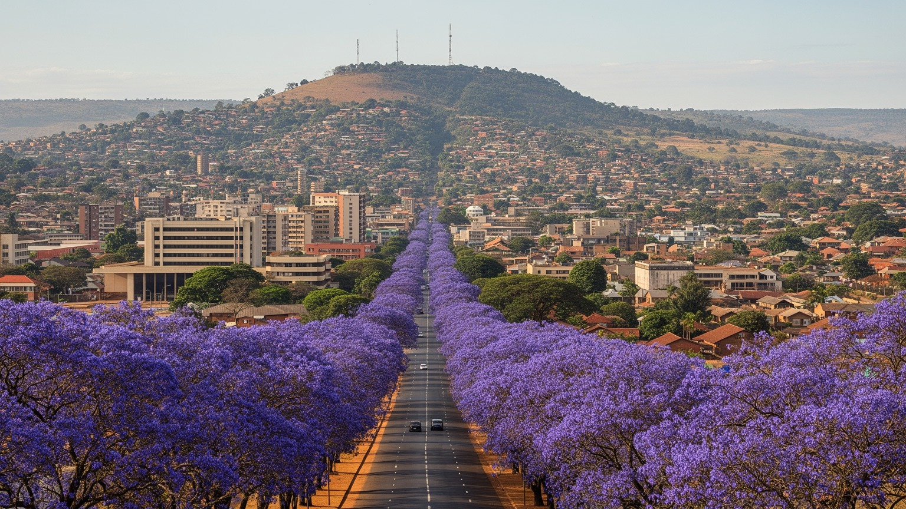
🇿🇼 ジンバブエ / 首都ハラレ / World City Atlas
高原の涼しい空気とジャカランダの並木を持つ、ジンバブエ最大の都市です。官庁、銀行、工場、市場、大学、教会、郊外住宅、停電と水不足に向き合う暮らしが、国の政治と経済を映します。
高原の首都
ハラレは、行政と金融、製造、小売、教育、医療が集中する首都です。涼しい高原気候と庭園都市の記憶を持ちながら、通貨、電力、水、住宅、雇用の不安が日常を形作ります。
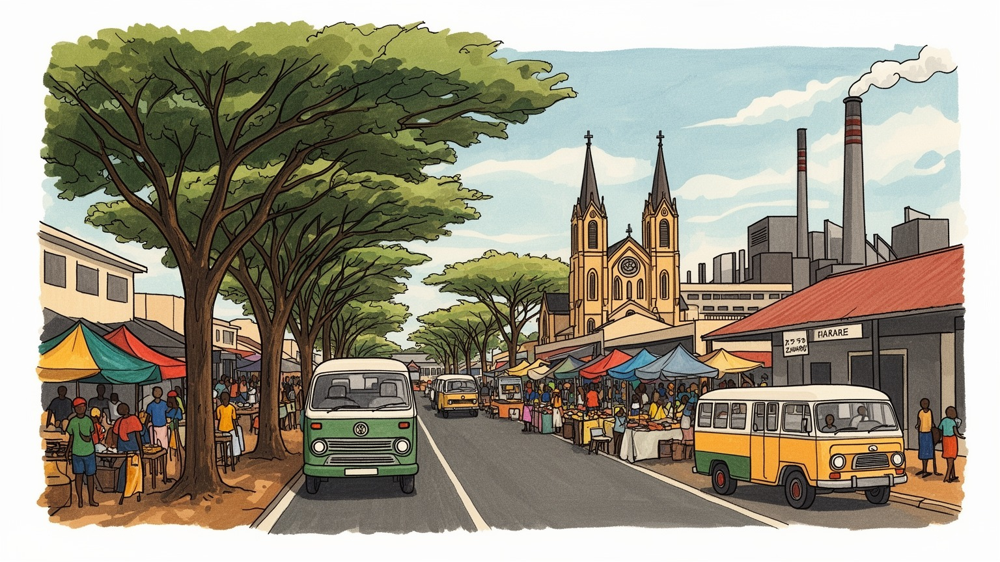
ハラレは南部アフリカの内陸国家を動かす首都です。独立、土地改革、制裁、選挙、地域外交、鉱物資源をめぐる判断が官庁街に集まり、南アフリカやモザンビーク港への回廊にも都市の命運がかかります。制度も揺れます。
雇用は行政、金融、製造、小売、建設、交通、教育、医療、非公式商業に広がります。工場の稼働率、通貨不安、輸入品価格、停電、若者の失業が、会社員にも露店商にも毎日強く響きます。外貨と燃料も日々響きます。
ショナ語、英語、ンデベレ語、移民の言葉が交わり、教会、ペンテコステ派、使徒派、音楽、石彫、文学、学校行事が都市文化を支えます。信仰は苦しい家計を助ける互助の場にもなります。礼拝と歌も日々支えます。
住民はコンビ、徒歩、自家用車、近所の店、市場、教会を使い分けます。旅行者は国立美術館、ムバレ市場、庭園、ヒーローズ・エーカー、近郊のドンボシャワを巡り、首都の層を感じます。高原の夕景も旅を彩ります。
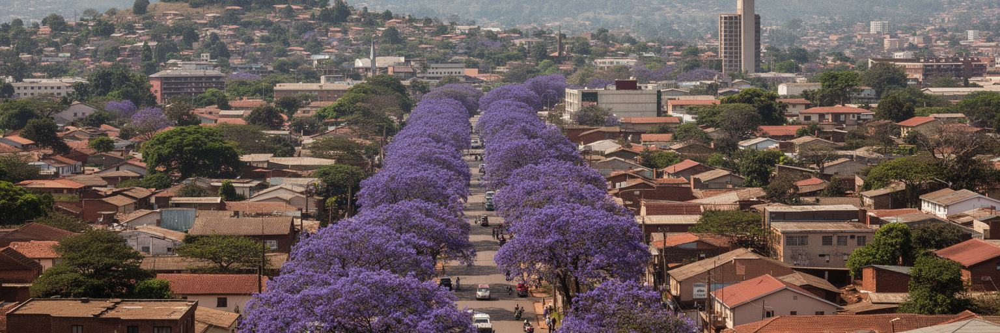
ハラレは標高の高い台地に広がり、熱帯アフリカの都市でありながら、朝夕に涼しさを感じる高原の首都です。雨季には街路樹と庭が濃い緑を見せ、乾季には空気が澄み、ジャカランダの紫が大通りを彩ります。この気候は、植民地時代に作られた庭園都市のイメージと結びつき、広い道路、低層の住宅地、芝生、クラブ、学校、行政地区の配置に影響を残しました。しかし、その緑の都市像はすべての住民に同じように開かれてきたわけではありません。中心部や北部郊外には広い敷地と木陰が多い一方、南西部や周辺地区では住宅密度、未舗装道路、水道、排水、交通費の問題が重くなります。気候の快適さは都市の強みですが、近年は水不足、停電、井戸への依存、無秩序な宅地開発、湿地の埋め立てが生活環境を揺らしています。ハラレを庭園都市として見る時、美しい並木だけでなく、誰が木陰と水に近く住めるのかを考える必要があります。高原の涼しさは都市の魅力ですが、公園、街路樹、湿地、貯水池、排水路を守れなければ、緑は特権的な景観に縮んでしまいます。ハラレの地形と気候は、ゆっくり歩ける首都の可能性を持つ一方、都市管理の弱さをはっきり見せる鏡でもあります。歩道の連続性や日陰の多さは、観光の印象だけでなく、高齢者、子ども、通勤者が街を使えるかを左右します。緑を守る政策は景観政策である前に、健康と公平さの政策です。
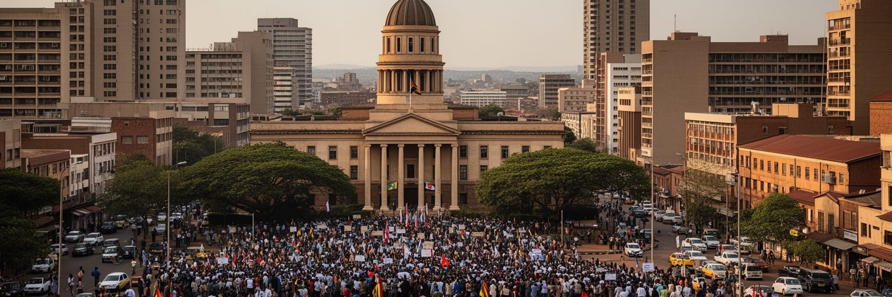
ハラレは、ジンバブエの大統領府、議会、省庁、裁判所、中央銀行、政党本部、外国公館、国際機関が集まる政治都市です。独立闘争の記憶、土地改革、与党支配、選挙をめぐる緊張、経済制裁、通貨政策、鉱業権、農業政策、地域外交が、首都の会議室と街頭に重なります。政治の決定は、地方の農地、鉱山、国境交易、学校、病院だけでなく、ハラレの家賃、給与、燃料価格、現金不足、警察の検問にも届きます。街には国家儀礼を示す大通りや記念施設があり、ヒーローズ・エーカーは独立国家の記憶を強く演出します。一方で、市民社会、労働組合、学生、教会、法律家、ジャーナリストは、政治的な自由と生活の安定を求めてきました。公共空間では、デモ、集会、選挙運動、警備、許認可が日常の緊張を作ります。ハラレを政治都市として読むには、権力の建物を見るだけでは足りません。官庁で作られる政策が、露店の営業場所、水道料金、学校の教材、病院の薬、地方から来る若者の職探しにどう影響するかを見ることが重要です。首都の政治は遠い制度ではなく、都市の暮らしを細かく動かす力です。信頼できる統計、開かれた議論、予測できる制度が整うほど、ハラレは緊張の中心から公共の交渉の場へ近づきます。政治の安定は治安だけで測れません。住民が明日の通貨、営業、通学、医療を予測できることも、首都の平穏を支える重要な条件です。
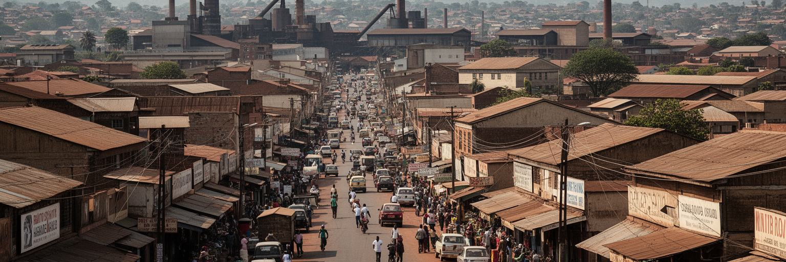
ハラレの経済は、金融、製造、小売、行政、交通、教育、医療、通信を中心に組み立てられています。中央銀行、商業銀行、保険会社、会計事務所、輸入業者、卸売商、工場、ショッピングセンター、地区市場が近い距離にあり、国の資金と商品を動かします。ジンバブエの製造業は、食品加工、飲料、繊維、化学、建材、印刷、金属加工などで都市の雇用を生みますが、停電、設備老朽化、外貨不足、輸入競争、需要の弱さに左右されます。金融業は企業と個人の決済を支えますが、通貨制度の変化とインフレの記憶は、人々に米ドル、現地通貨、モバイルマネー、現金を慎重に使い分けさせます。小売は、近代的なモールからムバレの卸売、市場の野菜売り、路上の携帯修理まで幅広く、都市の現金収入を細かく支えます。公式経済の数字に表れにくい露店、家事労働、送金、転売、日雇いの仕事も、家計を保つ重要な仕組みです。ハラレの経済力は大きなビルだけでなく、朝の市場で仕入れ、昼に工場へ通い、夜に送金を受け取る人々の反復で支えられています。安定した電力、信頼できる通貨、予測できる税と規制、交通の改善がそろえば、首都の産業はより広い雇用へつながります。経済の回復は、数字だけでなく、若者が技能を学び、女性が安全に商いを続けられる環境に表れます。工場と市場をつなぐ道路や倉庫も、雇用の質を左右する見えにくい基盤です。
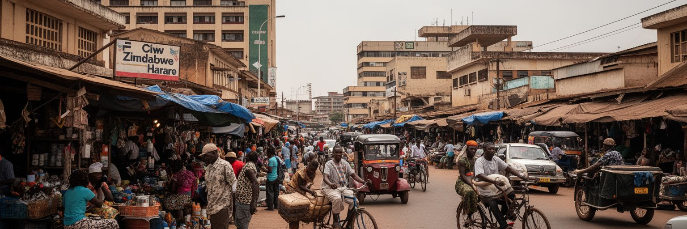
ハラレの日常経済を最も濃く感じられる場所の一つがムバレです。古いタウンシップであり、バスターミナル、卸売市場、露店、修理、音楽、サッカー、教会、地方から来る人々の入口でもあります。野菜、果物、衣料、古着、携帯電話、部品、食事、交通の手配が密集し、都市の低所得世帯と地方の生産地を結びます。ムバレは貧困や過密の象徴として語られることがありますが、実際にはハラレを動かす商業知識と人間関係が集まる場所です。露店商は仕入れ価格、警察や自治体の取り締まり、雨、日差し、交通費、現金の流れを読みながら働きます。正式な雇用が十分でない中、非公式経済は多くの家族にとって生活の柱です。一方で、衛生、火災、交通混雑、保管場所、トイレ、水、廃棄物、女性の安全、子どもの就学には課題が残ります。都市管理が露店を単に排除すれば、家計の最後の支えを壊すことになります。必要なのは、歩行者と商いが共存できる場所、日陰、清潔な水、透明な許認可、手頃な市場使用料、信用へのアクセスです。ムバレを読むことは、ハラレの正式な経済だけでは見えない都市の知恵を読むことです。小さな売買の積み重ねが、食品供給、地方とのつながり、若者の仕事、都市文化を支えています。市場の混雑は問題であると同時に、首都がまだ生活力を失っていない証拠でもあります。
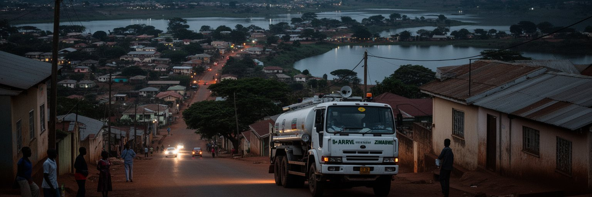
ハラレで暮らす人々にとって、水と電力は毎日の最も現実的な都市問題です。市の水は主にチベロ湖などの貯水と浄水施設に頼りますが、需要増、老朽化、化学薬品の不足、汚染、湿地破壊、配管の漏水、料金徴収の難しさが重なり、地区によっては長い断水が起きます。住民は井戸、ボアホール、給水車、貯水タンク、購入水を組み合わせ、家計と時間を使って水を確保します。電力も安定しにくく、停電は家庭の冷蔵、照明、通信、学校の勉強、工場の生産、店の決済に影響します。発電機や太陽光を導入できる世帯や企業と、選択肢の少ない世帯の差は大きいです。水道と電力の不安は、単なる不便ではなく、健康、教育、治安、女性と子どもの時間、企業の投資判断に直結します。雨季には排水不良やコレラなど水系感染症のリスクも高まり、都市の衛生が問われます。ハラレのインフラ課題は、経済危機だけでなく、都市の拡大と湿地への開発、維持管理の不足、自治体財政、政治的な調整の問題でもあります。大きな浄水施設や送電だけでなく、近所の排水路、ゴミ収集、公共トイレ、学校の水場を直すことが、首都の信頼を取り戻す第一歩になります。水と電気が安定する時、住民は初めて仕事と学びに時間を使えます。インフラは都市の背景ではなく、生活の前提そのものです。家庭の貯水タンクや小さな太陽光設備は、都市サービスへの不信と住民の工夫を同時に示しています。
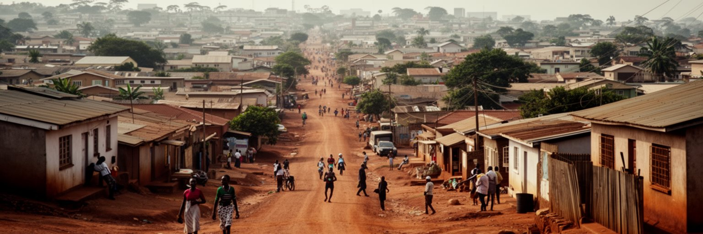
ハラレの住宅地は、中心部から北部の比較的豊かな郊外、南西部の高密度地区、周辺の新興宅地まで大きく広がっています。ボローデールやマウント・プレザントのような広い敷地の住宅地と、ハイフィールド、グレンビュー、ムフコセ、クウェクウェに向かう通勤圏の混雑した地区では、道路、水、学校、交通、治安、緑地へのアクセスが大きく違います。植民地期の人種分離都市の構造は、独立後も土地価格、通勤距離、サービス水準の差として残りました。都市人口が増え、地方から仕事や教育を求める人が来るほど、正式な住宅供給は追いつきにくくなります。周辺では区画販売や自力建設が進みますが、所有権、道路、排水、水道、学校、診療所が後回しになることがあります。家を持つことは安定の象徴ですが、遠い住宅地に住むと交通費と時間が家計を圧迫します。若者、単身者、低所得労働者は、親族宅、間借り、過密な部屋に頼ることも多いです。住宅格差は見た目の違いだけではありません。水が出る時間、停電への備え、学校までの距離、夜道の安全、子どもの遊び場、仕事への近さが、人生の選択肢を左右します。ハラレの都市計画は、広がる宅地を追認するだけでなく、公共交通、水、排水、学校、保健、緑地を先に考える必要があります。住まいを整えることは、首都の社会的な信頼を作ることでもあります。
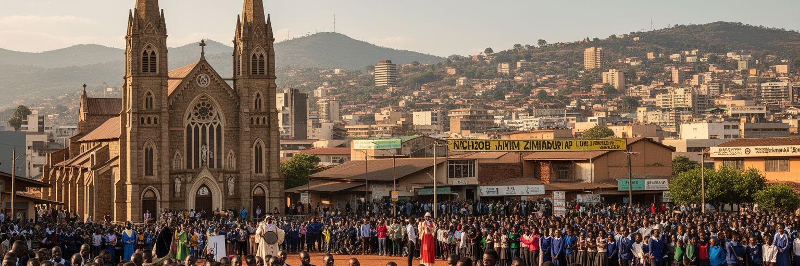
ハラレの文化は、政治と経済の緊張だけでは語れません。ショナ語と英語が広く使われ、ンデベレ語や周辺国から来た人々の言葉も交わります。教会は都市生活の大きな柱で、カトリック、英国国教会、メソジスト、ペンテコステ派、使徒派、独立教会が、礼拝、音楽、教育、相談、互助、病気や失業時の支援を担います。信仰は個人の内面だけでなく、家族、職場、政治、商売にも関わる公共的な力です。音楽ではチムレンガ、ゴスペル、サングラ、ヒップホップ、ダンスホールが若者の声を運び、街角、教会、ミニバス、酒場、ラジオ、オンラインを行き来します。石彫や現代美術、文学、演劇、詩、ファッションは、独立の記憶、都市の苦しさ、ユーモア、希望を表現します。国立美術館や劇場だけでなく、学校の発表会、教会の合唱、露店で流れる音楽、結婚式の踊りが文化の現場です。経済が不安定な時ほど、文化は気晴らしだけでなく、社会批評と互助の言葉になります。ハラレの多くの住民は、物価や停電に疲れながらも、週末の礼拝、音楽、親族行事、スポーツ、近所の会話で都市のつながりを保っています。文化の強さは、豪華な施設よりも、困難の中で人々が声を合わせる場に表れます。ハラレを歩くと、祈りと音楽が都市の不安を受け止める柔らかな構造になっていることが分かります。笑いと即興の力も、厳しい日常を越える大切な文化資本です。
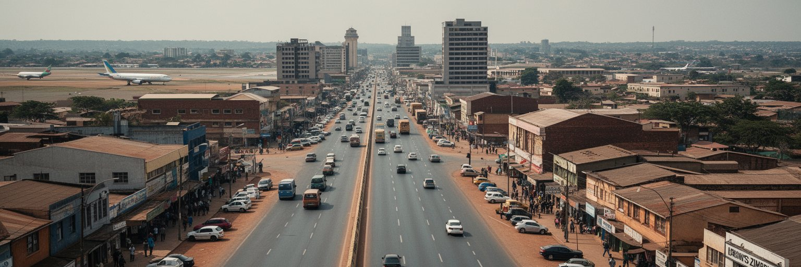
ハラレは海を持たないジンバブエの交通結節点です。ロバート・ガブリエル・ムガベ国際空港、幹線道路、鉄道、バスターミナル、貨物倉庫、コンビと呼ばれるミニバスが、首都を国内各地と南アフリカ、モザンビーク、ザンビア、ボツワナ方面へ結びます。輸入品の多くはベイラ港、ダーバン港、国境回廊を経由して届き、燃料、食品、機械、医薬品、建材の価格は道路、通関、外貨、治安、港湾の状況に左右されます。市内ではコンビ、自家用車、タクシー、徒歩が住民の移動を支えますが、渋滞、運賃、燃料不足、道路の穴、歩道の不足、交通安全が大きな負担です。通勤圏が広がるほど、低所得者は仕事に行くために時間と現金を多く失います。中心部の歩行者、露店、バス、車が混ざる街路では、移動と商いをどう調整するかが都市管理の課題になります。物流は経済だけでなく、政治にも敏感です。通貨政策、輸入規制、国境の混雑、南部アフリカ開発共同体との関係は、市場の棚と工場の稼働へすぐ反映されます。ハラレを交通都市として読むと、首都の暮らしが遠い港と国境に強く依存していることが分かります。道路の補修、公共交通の信頼性、歩行者の安全、貨物ルートの効率化は、日常生活の安定そのものです。移動が安く安全になれば、学校、仕事、市場、病院への距離は縮まります。乗り場の秩序と歩道の日陰も、働く都市の使いやすさを決めます。
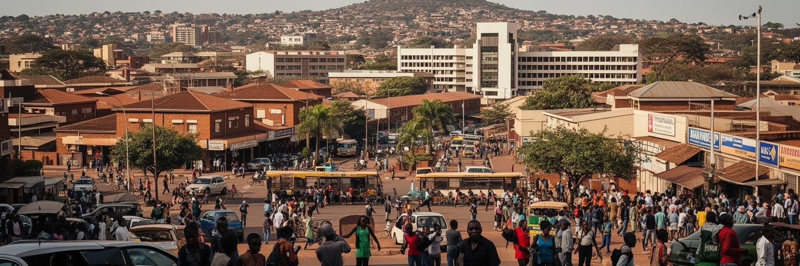
ハラレには大学、専門学校、病院、研究機関、新聞社、法律事務所、NGO、教会系団体、国際機関が集まり、国の知識と支援の窓口になります。ジンバブエ大学は独立後の政治家、専門職、研究者を多く送り出し、学生運動や公共討論の場にもなってきました。医療では大きな病院や専門施設が集中しますが、医薬品、設備、医師や看護師の待遇、海外流出、患者の負担が課題です。地方から来る学生や患者にとって、ハラレは希望の場所である一方、宿泊、交通、食費、家賃が重くのしかかります。市民社会は、人権、選挙、女性、子ども、保健、HIV、障害、環境、住宅、労働の問題を扱い、制度と住民の間をつなぎます。しかし政治環境が緊張すると、報道、集会、批判、資金調達の余地は狭くなります。教育と医療の集中は、首都の専門性を高める一方、地方との格差も見せます。ハラレを知識都市として読むには、大学名や病院名だけでなく、学生寮の不足、授業料、図書館、インターネット、病院の待ち時間、薬局の価格、地域団体の小さな活動を見る必要があります。知識と支援が首都に集まるほど、それを貧しい地区と地方へどう届けるかが問われます。市民が自分の問題を語り、専門家と行政が耳を傾ける場が増える時、ハラレの知性は都市全体の力になります。若い専門職が国内に残れる賃金と働く環境も、首都の将来を左右します。
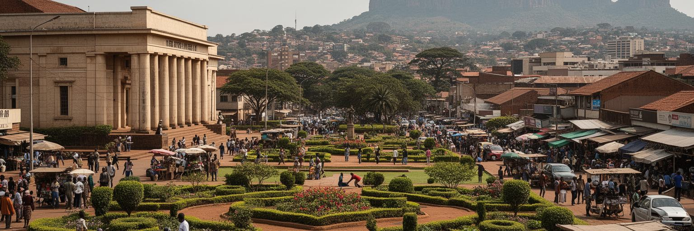
ハラレ観光は、巨大な名所を次々に巡る旅というより、首都の日常と近郊の景観をゆっくり読む旅です。中心部では国立美術館、ハラレ・ガーデンズ、アフリカン・ユニティ・スクエア、市場、カフェ、古い建物、政府地区を歩くことができます。ムバレでは市場と交通の活気を感じられますが、写真撮影や人混みには配慮が必要です。郊外にはワイルド・イズ・ライフ、植物園、チベロ湖方面の景観があり、少し足を延ばせばドンボシャワの花崗岩の丘と岩絵が首都近郊の重要な遺産になります。ドンボシャワでは夕方の岩山から高原の広がりを見渡せ、都市と農村、古い信仰と現在の観光が重なります。ヒーローズ・エーカーは国家の記憶を演出する場所で、独立と政治の物語を理解する入口になります。観光客は治安、移動手段、現金とカード、燃料事情、停電、営業時間を確認する必要があります。ハラレの魅力は、洗練された庭園都市の面と、経済不安を抱えた生活都市の面を同時に見られる点です。美術館の展示、露店の会話、教会の音楽、ジャカランダの並木、岩山の夕景をつなぐと、首都の記憶が立体的になります。旅の価値は消費の大きさではなく、ガイド、運転手、工芸家、市場の店に敬意を払い、都市の困難と創造力を同じ視線で受け止めることにあります。短い滞在でも、朝の市場と夕方の高原の光を合わせて見ると、都市の表情は深まります。
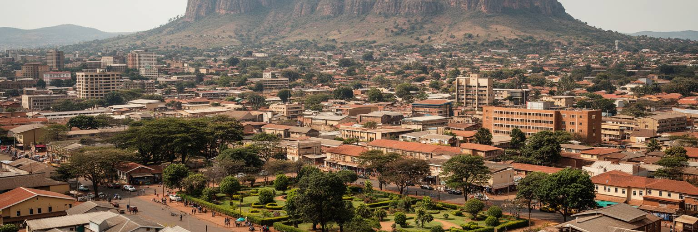
ハラレは、経済規模だけで世界都市を測る見方では見落とされやすい首都です。しかし、ここには南部アフリカの政治、通貨不安、土地改革後の国家運営、鉱物資源、内陸物流、都市インフラ、非公式経済、信仰、若者の移動、文化表現が密集しています。高原の美しい並木と、断水に備えるタンク、銀行街と露店、広い郊外住宅と過密な地区、国家儀礼と市民社会の緊張が同じ都市にあります。ハラレを読む時は、成功と失敗を単純に分けないことが大切です。経済危機や政治的な制約は深刻ですが、人々は商い、送金、教会、家族、学校、音楽、工夫で日々をつないでいます。都市の回復力は、困難を美談に変える言葉ではなく、壊れやすい制度の中でも生活を続ける住民の技術として見るべきです。首都の価値は、官庁や銀行が集まることだけでなく、水が出るか、電気が続くか、通勤できるか、若者が働けるか、違う背景の人が同じ市場で暮らせるかに表れます。ハラレは、庭園都市の記憶と現代アフリカ都市の厳しさが重なる場所です。その複雑さは、都市の重要性をランキングや所得だけで決められないことを教えます。緑の大通りから市場の混雑、近郊の岩山までを一続きで見ると、ハラレは国家の不安と市民の持続力を映す、読む価値の高い首都になります。危機の説明だけで終わらせず、日々の修理、交渉、祈り、商いを見ることが、この都市への礼儀です。